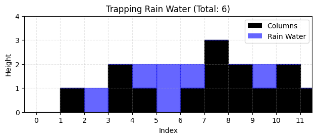

class Solution:
def twoSum(self, nums: list[int], target: int) -> list[int]:
n = len(nums)
for i in range(n):
for j in range(i + 1, n):
if nums[i] + nums[j] == target:
return [i, j]LeetCode HOT 100
哈希
1.两数之和
给你一个数组 nums 和一个目标值 target，要你找到两个数： \[ nums[i] + nums[j] = target,\quad i \ne j \] 然后返回这两个数的下标。 题目保证：
一定有且只有一个答案
不能用同一个元素两次
题解
因为target是一个给定的值，一个很自然的想法是把所有这样的两数之和都拿出来和target比较，一定可以找到符合的。
先取nums[0]作为第一个数，再从nums[1]遍历到nums[n-1]作为第二个数；如果没有就把nums[1]作为第一个数，从nums[2]开始遍历……这很自然。
问题在于循环套循环的耗时太长了。遍历一次单层循环的时间复杂度是O(n)，双层循环就是O(n2)了。
我觉得一个很扯淡的事情是人很难靠自己想到还有别的什么操作方法。
我们毫无征兆地引入了哈希表。这就是知识锁吧。
需要注意的是，这道题的答案是唯一的。也就是说这么多数字，只有一对是配上的，两个数一一对应，这种关系也只有一对。
如果当前看到一个数 x，那我想找的另一个数就是 target − x
所以我们可以一边遍历数组，一边做两件事：
先看 target - nums[i] 之前出现过没有，如果出现过，直接找到答案
如果没出现过，就把当前数字和它的下标存起来
这就要用到哈希表（Python 里就是 dict）。
简而言之，枚举太慢，而我们刚好有一个工具能够使查询变得特别快，刚好这个题也可以转换成查询来做。
所以我们代码的重点就是要实现边遍历边判断同时还得存，以及只遍历一次，不用多跑了。
class Solution:
def twoSum(self, nums: list[int], target: int) -> list[int]:
seen = {}
for i, x in enumerate(nums):
need = target - x
if need in seen:
return [seen[need], i]
seen[x] = i需要注意的几个细节：
对seen这个字典，键是遍历到的数，值是下标（毕竟你最后要求返回的是下标对）。need里存满了单身哥布林。
enumerate的作用是把一个可迭代对象转换为枚举对象，返回一个元组迭代器，每个元素是(index,value)这样的对。
if need in seen是在字典里检索键。
这样下来，时间复杂度是O(n)。空间复杂度也是O(n)。
49.字母异位词分组
何异位？
给你一个字符串数组 strs，把那些“字母一样、只是顺序不同”的字符串分到同一组里。
比如：
- “eat”, “tea”, “ate” 是一组
- “tan”, “nat” 是一组
- “bat” 自己一组
换句话说，字母异位词的意思是：
- 两个字符串长度相同
- 每个字母出现次数也相同
- 只是排列顺序不同
题解
如果已经知道用dict做的话，我的第一反应是把字符串的性质转换为编码作为键，遍历一次，遍历到一个字符串的时候如果这个特殊编码的键没有在dict里面出现过，就新建一个键值对，出现过就往value里面append，最后把这个dict的values全输出来就好了。至于编码，能是26位二进制吗能是26个质数的乘积吗，出现次数就是幂次？但这样运算压力不知道会不会太大。
好像完全可以使用纯字符串的方式来做啊。一种方式是直接重排字母序顺不影响读阅，把”abandon”排成”aabdnno”；还有一种是计数，写成”a2b1d1n2o1”。似乎完全取决于我们有什么处理字符串的工具。止步于此了。
from collections import defaultdict
class Solution:
def groupAnagrams(self, strs: list[str]) -> list[list[str]]:
groups = defaultdict(list)
for s in strs:
key = ''.join(sorted(s))
groups[key].append(s)
return list(groups.values())我知道！defaultdict(list)默认是空列表，上来直接append就好，不用再判断key在不在dict里面了。
主要是我忘记了还有''.join(sorted(s))这种东西，sorted返回的是升序字符列表，所以还得join回去。
至于list(groups.values())就是前面提到的输出所有values。
在字符串长度为k时，sorted的时间复杂度为O(k log k)，log k是比较次数。而遍历需要O(n)，所以总的时间复杂度为O(nk log k)。空间复杂度是O(nk)。
字母计数也是可以做的。其实我们不需要显式写出字母，只要约定好26个位置就可以了。那么是一个列表？不全对。
from collections import defaultdict
class Solution:
def groupAnagrams(self, strs: list[str]) -> list[list[str]]:
groups = defaultdict(list)
for s in strs:
count = [0] * 26
for ch in s:
count[ord(ch) - ord('a')] += 1
groups[tuple(count)].append(s)
return list(groups.values())注意啊，虽然这里是两层循环，但一次是n一次是k，总的时间复杂度是O(nk)，还比排序法快一点（特别是字符串长度比较长的时候优势更明显）。空间复杂度还是O(nk)。
我要哈气了。
另外也不要忘记count = [0] * 26这种用法。
128.最长连续序列
给你一个无序数组 nums，找出其中最长的“连续整数序列”的长度。
注意：
- 这里说的连续，是指数值连续，比如 1,2,3,4
- 不要求它们在原数组里的位置连续
- 数组是无序的
- 要求时间复杂度 O(n)
例如：nums = [100,4,200,1,3,2]
虽然原数组乱序，但其中有连续段1,2,3,4,所以答案是 4。
题解
根据我们上一题学到的sorted相关知识，马上发现先排序的时间复杂度已经有O(n log n)了，后面干什么也救不回来了，所以肯定不行。
根据两数之和那道题的想法，寻找和遍历到的数相邻的数应该是不对的，可能需要通过遍历到的数本身的相邻性质来分堆？例如，假设遍历到了数a：
- a本身在任一堆里：不写入。否则：
- a+1或a-1都不在任一堆里，将a写入任一堆。
- a+1和a-1中只有一个出现在了某一堆里，把a写进那一堆。
- a+1和a-1都出现了，当然在不同堆，就把这两堆写到一起，再把a写进去。
这样就可以在只遍历一次的情形下进行相邻数的聚类了。最后再统计一下各堆数量，得出最多的那一个。不过我并不知道上面的想法如何实现，也不知道时间复杂度，最重要的是好像在这套想法里看不到键在哪里（笑
我一直尝试想从信息的角度分析一个问题的实现和时间复杂度之间的关系。题目要求O(n)，说明排序的信息有的是冗余的，对我们解答这道题的要求没有益处。特别的，这些题要求得到的东西中信息也是有限的，例如只需要得出最长连续序列的长度，而不是序列本身。我不知道这种想法是不是正确的或者有意义的。
让我们看看答案。
class Solution:
def longestConsecutive(self, nums: list[int]) -> int:
num_set = set(nums)
longest = 0
for x in num_set:
if x - 1 not in num_set: # x 是连续段起点
cur = x
length = 1
while cur + 1 in num_set:
cur += 1
length += 1
longest = max(longest, length)
return longest先把列表转换为集合来去重。这个题最大的不同是，两数之和的问题需要返回下标，依赖遍历的历史，同时是有序的；而这个问题只需要判断符合要求的数在不在就可以了，很适合无序的集合。而且in set这样的查询是O(1)的。
题解的标志性思路是通过查询x-1在不在set内来判断x是不是一个连续序列的开头。更进一步的是题解相信得到了这个信息可以支撑它往后延伸查询出整个序列，并且不违反时间复杂度限制。
注意，我们不是在对一个数组下标进行延伸，我们是在对值本身进行x+1, x+2, x+3…的递增尝试，每一次尝试我们都使用in set查询一次，查询成功长度自加，查询失败则更新最大长度。
而在时间复杂度上，因为对一个（去重了的）元素而言，仅有两种情况：
- 是连续序列开头。那么它会在for循环中被访问一次，不在while循环中被访问；
- 不是开头。除了for循环那一次，还在它的序列的开头元素引发的while循环中被访问一次。但也仅此而已了，一个开头只会导致它的序列中的后续元素被访问一次，而一个后续元素也只对应一个开头。
所以总访问次数必定不超过2n，所以是O(n)的时间复杂度。（注意啊不是说非得只能访问n次，O(n)不是n啊）
我觉得题解的关键就是无序查询的便利性以及开头元素和后续元素的一次性对应。
除了向右延伸的解法以外，还真有一种两边延伸的解法。关键在于，并不需要像我们最开始想的维护堆元素本身，而可以直接去维护长度（准确来说是维护边界元素及其序列长度）。
class Solution:
def longestConsecutive(self, nums: list[int]) -> int:
length = {}
ans = 0
for x in nums:
if x in length:
continue
left = length.get(x - 1, 0)
right = length.get(x + 1, 0)
cur = left + 1 + right
length[x] = cur
length[x - left] = cur
length[x + right] = cur
ans = max(ans, cur)
return ans边界长度哈希解法。先按下不表。另外注意这段代码中的get用法：
双指针
283.移动零
给你一个数组 nums，要求你：
- 把所有 0 移到数组最后面
- 非零元素的相对顺序不能变
- 必须 原地修改
- 不能新开一个同样大小的数组来复制
题解
因为不能复制，所以只能对原数组进行原地操作。一个自然的想法是沿着下标遍历，如果元素不是0就继续，如果是0，把这个元素删除的同时，给list append一个0。考虑到可能会出现nums[2]=0, nums[3]=0这种连续0的情况，如果直接删除，依然会有nums[3]往前补一位成为nums[2]。那么这个遍历指针在删除元素的同时还得回退？或者说能不能继续往后检查连续0的情形，然后把这些连续0一次性放到后面？
这个想法本身确实没啥问题，删除的同时确实也要回退。但是时间复杂度比较高，每删一次后面的元素都要搬一次。
那种好像已经没有别的操作了的感觉又来了。
看了答案之后我发现一个思维定势是，我们会觉得仿佛数组的下标和值是绑死的，就好像一个小朋友有自己的一把椅子。小学时候换座位，大家最讨厌换完了发现自己的椅子被别人拿走了，坐上了很陌生的椅子，很不情愿。但从老师的视角看，才不会管你们谁坐了谁原来的椅子，总的座位换完就好了。
在前面的那个自然的想法里，我们只会使用pop和append两种方法，而删除后的补位就好像小朋友抱着自己的椅子往前挪了一格。我们需要学会，直接将值指派到某个位置，同时不必担心一个位置上新数覆写旧数丢失信息。特别是，如果一个数是0，它会到最后面去，那么一个非0数直接坐到它原来的位置上是不会有问题的。
我们可以想象有一个位置 k，表示：
下一个非零元素应该放到哪里
然后从左到右扫描数组：
- 如果当前数不是 0，就把它放到 k
- 然后 k += 1
扫描完以后：
- 前 k 个位置已经是按顺序排好的非零元素
- 后面全部填 0
class Solution:
def moveZeroes(self, nums: list[int]) -> None:
k = 0
for x in nums:
if x != 0:
nums[k] = x
k += 1
for i in range(k, len(nums)):
nums[i] = 0与其说是移动0，不如说是移动非0。而k则是从0开始点出了总共有多少个非0数，让它们从头开始坐。尾部剩下的都用0填满即可。
它的时间复杂度是O(n)，空间复杂度是O(1)（因为是原地嘛）。
不过，双指针还没出场呢。
上面这个方法有一个小问题是，如果前面从来都没有过0，那么这些非0数就不需要挪动位置啊，这些重新赋值的操作对它们而言是无意义的。例如nums=[1,2,3,0,4]，前三个数不用动，不需要再nums[2]=3了。就好像你让本来就不用换位置的小朋友先站起来再坐下一样。
既然这样，我们就额外维护一个指针，它指向下一个非零元素应该放的位置。在遍历到非0元素时，如果它和遍历指针指向同一个位置，那就啥也不干（已经排对了）。如果指向不同，就交换这两个元素。
class Solution:
def moveZeroes(self, nums: list[int]) -> None:
i = 0
for j in range(len(nums)):
if nums[j] != 0:
if i != j:
nums[i], nums[j] = nums[j], nums[i]
i += 1这样：
- 前面 [0, i-1] 始终是已经整理好的非零区
- [i, j] 是待处理区域
自然地把所有0挤到最后。
它的时间复杂度是O(n)，空间复杂度是O(1)。虽然复杂度没有变化，但双指针交换法比覆写补0法操作更少。
11.盛最多水的容器
给你一个数组 height。
第 i 根竖线在位置 i，高度是 height[i]。 任选两根线，和 x 轴围成一个容器，问最多能装多少水。
如果选两根线，左边下标 l，右边下标 r。
那么宽度是 r - l，高度取决于较短的那根线，因为水会从短板那里漏掉。
所以面积公式是：
\[ \text{area} = (r-l)\cdot \min(height[l], height[r]) \]
这题本质就是在很多对 (l, r) 中找最大值。
题解
首先暴力枚举肯定是可以的，\(C_n^2\)，复杂度是O(n2)。
其次，面积并没有很强的序列性，这应该不是一个纯单向遍历的问题？只是对于最大面积而言，是否存在一些最优性质可以在演进的时候快速判断是否是往更大的方向演进？我只知道假设一条边固定，另一条边逐渐远离，如果二者的最小值增大了，面积肯定是扩张的，但如果减小了，不一定面积就会缩小。怎么有点局部最优的意味了（）感觉又走远了。
其实这题贪心的思路并不是局部最优导向全局最优，而是反过来进行剪枝。
试想两条线取最左和最右。现在尝试移动边界，宽度一定更小了，换取的是可能找到更长的最小边的机会。
对于不等长的两条边界，应当如何移动呢？移动长的那条边，对增大预期面积没有帮助。应当只移动短的那条边，还有增大面积的机会。
class Solution:
def maxArea(self, height: list[int]) -> int:
l, r = 0, len(height) - 1
ans = 0
while l < r:
area = (r - l) * min(height[l], height[r])
ans = max(ans, area)
if height[l] < height[r]:
l += 1
else:
r -= 1
return ans卧槽。怎么这么简单的。
时间复杂度是O(n)，空间复杂度是O(1)。
15.三数之和
给你数组 nums，找出所有不重复的三元组：
\[ nums[i] + nums[j] + nums[k] = 0 \]
要求：
- 三个下标互不相同
- 返回所有不重复的三元组。这里指的是值的组合不能重复。
- 三元组内部顺序无所谓，输出顺序也无所谓
题解
暴力\(C_n^3\)吗，有点意思。
虽然三数之和和两数之和很像，但我感觉没什么可以借鉴的。毕竟两数之和保证这样的数对唯一，但这里的三元组可以有很多个；就算我们先第一次遍历把每个数作为-target一次，寻找其余两个数也不太像两数之和。
嗯……a+b=-c的思路好像确实是对的。但对两数之和的借鉴就到此为止了。实际上，在固定了c去寻找a和b的过程中，有一个实现难度是被我们忽视的，那就是三元组的值的组合不能重复。在我们按下标遍历时，会出现两个不同下标元素值相同的情况，容易得到重复结果。去重才是这道题最难的地方。
class Solution:
def threeSum(self, nums: list[int]) -> list[list[int]]:
nums.sort()
ans = []
n = len(nums)
for i in range(n - 2):
if nums[i] > 0:
break
if i > 0 and nums[i] == nums[i - 1]:
continue
l, r = i + 1, n - 1
while l < r:
s = nums[i] + nums[l] + nums[r]
if s < 0:
l += 1
elif s > 0:
r -= 1
else:
ans.append([nums[i], nums[l], nums[r]])
l += 1
r -= 1
while l < r and nums[l] == nums[l - 1]:
l += 1
while l < r and nums[r] == nums[r + 1]:
r -= 1
return anssort起手会引起我们的警觉，排序并不是一个很快的操作，但在这里有两个必要性。
一是排序带来的单调性信息有助于我们使用双指针（但这么想有点事先知道要用双指针做的意思）。双指针似乎需要值的一些性质来指示指针该在什么条件下动。移动零的问题中，元素是否为0指示了“下一个非零数放在哪里”的指针要不要移动；盛最多水的问题里，双指针值的相对大小指示了左右指针谁该移动。
排序后数组从小到大。这样当你固定 i 后，在 [i+1, n-1] 里找两数和，就有了单调性：
- 和太小，就左指针右移，左指针元素会增大
- 和太大，就右指针左移，右指针元素会减小
- 和刚好，在记录的同时双指针都要移动，同时要注意去重
（为什么我感觉实际上有i,r,l三个指针呢？确实如此，一层枚举，一层双指针，但关键的优化在这层双指针，所以就这么叫了。）
二是，排序会自然地让相等元素挨在一起，有利于我们去重。
我们详细地回顾去重流程。
一方面，在枚举nums[i]时，如果它和nums[i-1]一样，得到的三元组也一样，所以直接跳过。
另一方面，对于和刚好的情况，不能仅仅左右都只移动1格了事。如果移动到了相等的数，就继续移动，实现跳过的效果。
同时还有一个小细节。
if nums[i] > 0:
break这是因为如果nums[i]是正数，它后面的所有数都不小于它，也是正数，三个正数和不可能是0。这是排序带来的额外剪枝。
排序的时间复杂度是O(n log n)，i的遍历是O(n)，每个i下双指针是O(n)，所以总体是O(n2)。空间复杂度是O(1)。
42.接雨水（困难）
给你一个数组 height，每个数表示一根柱子的高度。
下雨后，低的地方会积水，求总共能接多少水。
例如对于height = [0,1,0,2,1,0,1,3,2,1,2,1]，图示如下。

题解
我想了很久。我觉得需要去确定每个盛水区域的边界，池子的两条边限制了池子的面积。假定左边右边下标为l和r，那么池子的面积（盛水量）应当表示成
\[ \text{water} = (r-l-1)\cdot \min(height[l], height[r]) - \sum_{i=l+1}^{r-1} height[i] \]
注意到我们这里把两个相邻的边界也认为可以盛水，只是面积为0；前提是它们被认为是一个水池的边界。
关于边界的定义我认为要从两方面出发。一方面是直观地看，最高的柱一定是边界；同时其他的池子边界应该也是相对上比较高的值，例如从最搞柱长6开始往右看，如果为6,2,3,1,4,...，3因为只是局部最高值，没能比4高，所以3一定不是边界。但与此同时我们也不能断言4就是边界了，可能往后看还能有一个5。于是我们得出了另一方面的判断，水池的边界选择一定也和数组边缘的元素相关，特别是我们需要找到第一个水池的左边界和最后一个水池的右边界，才能结合全局最高值推出其他边界。
由于数组的左右两端被截断了，不能形成水池的壁，所以第一个水池的形成需要边界成为局部最大值。
这个形成过程是左右对称的。假设全局最大值在k处。如果这个k不唯一，则所有这样的ki之间都能形成水池，所以等效于只有一个k的情况。
指针i从0开始往右遍历，第一个使得height[i+1] < height[i]的i就是第一个水池的左边界。记为i0。
指针继续遍历，记录下i1,i2,i3...，使得height[i_{n-1}] <= height[i_n]，直至记录到k。换言之，是“从左往右，第一次下坡开始后，所有刷新了当前边界高度的点”。
指针j从n-1开始往左遍历，和i的情形一致，第一个使得height[j-1] < height[j]的j就是最后一个水池的右边界。记为j0。继续遍历j，记录那些更新了最大值的j，直至记录到k。
这样我们就得到了所有的边界，然后将相邻两个代入求面积再相加即可。
问题是我们并不清楚这样的时间复杂度。首先我们要判断全局最大值，然后ij从两边往中间遍历一次，面积求和过程总共再遍历一次。应该也是O(n)。不过这样的下标操作还是有些繁琐了，在编写实际代码层面很可能出错或者没有妥善处理极端情况。
g老师给我写了一个。我这个想法好像真没错，虽然不是标准解。空间复杂度也是O(n)。就是代码复杂度，有点高。
class Solution:
def trap(self, height: list[int]) -> int:
n = len(height)
if n < 3:
return 0
# 第一个可能形成水池的左边界：第一次下坡的位置
i0 = next((i for i in range(n - 1) if height[i] > height[i + 1]), None)
if i0 is None:
return 0
# 最后一个可能形成水池的右边界：从右看第一次下坡的位置
j0 = next((j for j in range(n - 1, 0, -1) if height[j] > height[j - 1]), None)
if j0 is None or i0 >= j0:
return 0
# 选左侧第一个全局最大值，避免多最大值时定义含糊
max_h = max(height)
k = height.index(max_h)
# 从左往 k 扫，记录新的“前缀最大边界”
left_bounds = []
if i0 <= k:
left_bounds.append(i0)
last = i0
for i in range(i0 + 1, k + 1):
if height[i] >= height[last]:
left_bounds.append(i)
last = i
# 从右往 k 扫，记录新的“后缀最大边界”
right_bounds = []
if j0 >= k:
right_bounds.append(j0)
last = j0
for j in range(j0 - 1, k - 1, -1):
if height[j] >= height[last]:
right_bounds.append(j)
last = j
# 合并左右边界链，得到从左到右的完整边界序列
bounds = left_bounds[:]
for idx in reversed(right_bounds):
if not bounds or bounds[-1] != idx:
bounds.append(idx)
# 前缀和：方便 O(1) 求中间柱子面积
pref = [0] * (n + 1)
for i, h in enumerate(height):
pref[i + 1] = pref[i] + h
# 对每一对相邻边界套你的面积公式
ans = 0
for l, r in zip(bounds, bounds[1:]):
water_rect = (r - l - 1) * min(height[l], height[r])
solid_area = pref[r] - pref[l + 1]
ans += water_rect - solid_area
return ans显然这不是我自己能正确写出来的代码。但这个长度吧很像我自己努力水出来的代码。
接下来我们来挨个学习主流解法。
对于某个位置i，它上面能不能存水是由它左右两边的最高柱子决定的。因为水需要两边都有挡板。
left_max[i]是i左边到i自己这一段的最高柱子right_max[i]是i右边到i自己这一段的最高柱子
那么位置i的接水量是
\[ \min(left\_max[i], right\_max[i]) - height[i] \]
class Solution:
def trap(self, height: list[int]) -> int:
n = len(height)
left_max = [0] * n
right_max = [0] * n
left_max[0] = height[0]
for i in range(1, n):
left_max[i] = max(left_max[i - 1], height[i])
right_max[n - 1] = height[n - 1]
for i in range(n - 2, -1, -1):
right_max[i] = max(right_max[i + 1], height[i])
ans = 0
for i in range(n):
ans += min(left_max[i], right_max[i]) - height[i]
return ans注意这里左右侧最大值都是可以开数组预处理的。时间复杂度和空间复杂度都是O(n)。
更进一步地，既然每个位置只需要左右两边的最大值，那我们可以不把整个数组都存下来，而是在双指针移动过程中维护它们。
设l在左边，r在右边，
left_max表示当前从左到右见过的最高柱子right_max表示当前从右到左见过的最高柱子
当前该算哪一边的水量？谁那边的最大挡板更小，就先算谁，因为某位置的水量取决于左右挡板的较小值。
class Solution:
def trap(self, height: list[int]) -> int:
l, r = 0, len(height) - 1
left_max = right_max = 0
ans = 0
while l < r:
if height[l] < height[r]:
if height[l] >= left_max:
left_max = height[l]
else:
ans += left_max - height[l]
l += 1
else:
if height[r] >= right_max:
right_max = height[r]
else:
ans += right_max - height[r]
r -= 1
return ans以及还有一种查找边界的“单调栈”法。先按下不表。
class Solution:
def trap(self, height: List[int]) -> int:
res = 0
stack = []
for i in range(len(height)):
while stack and height[i]>height[stack[-1]]:
# cur=stack[-1]
cur=stack.pop()
if not stack:
break
h=min(height[i],height[stack[-1]]) - height[cur]
res += (i-stack[-1]-1)*h
stack.append(i)
return res 滑动窗口
3.无重复字符的最长子串
给你一个字符串 s，要找最长的、没有重复字符的连续子串长度。
注意是：
- 子串：必须连续
- 不是子序列
例如：
- “abcabcbb” 的答案是 3，因为 “abc” 最长
- “bbbbb” 的答案是 1
- “pwwkew” 的答案是 3，对应 “wke”
题解
如果固定子串的左边界，例如对”abcabcbb”固定左边界为最左边的a，那么右边界一直往右遍历，截到”abca”就会遇到冲突。这个时候只要再往右移动左边界，取到”bca”就可以。但如果对于”pwwkew”，截到”pww”产生冲突时，左指针往右并不能解决问题，那样会截出”ww”还是不对的。
如果这题还是双指针来做，对于一个无重复子串，指针该怎样移动来可能增长子串？同时，当子串的增长出现了重复字符情况，该怎么处理？
我们维护一个窗口 [l, r]，表示当前这段子串没有重复字符。
再用一个集合 seen 记录窗口里有哪些字符。
做法是：
- r 不断右移，尝试加入新字符
- 如果新字符没出现过，窗口继续扩大
- 如果新字符重复了，就不断移动 l，把左边字符移出集合，直到不重复为止
class Solution:
def lengthOfLongestSubstring(self, s: str) -> int:
seen = set()
l = 0
ans = 0
for r in range(len(s)):
while s[r] in seen:
seen.remove(s[l])
l += 1
seen.add(s[r])
ans = max(ans, r - l + 1)
return ans由于每个字符最多被加入集合一次，也最多被移出集合一次，也就是说：
- r 总共走 n 步
- l 总共也最多走 n 步
所以总的时间复杂度是O(n)。空间复杂度是O(k)，k是不同的字符数，最坏的情况是O(n)。
一个常见的优化是使用哈希表记录字符最后的出现位置。
如果当前字符 s[r] 之前出现过，而且它上一次出现位置在当前窗口里，那么左指针可以直接跳到“上次出现位置 + 1”，不必一个个删。
class Solution:
def lengthOfLongestSubstring(self, s: str) -> int:
last = {}
l = 0
ans = 0
for r, ch in enumerate(s):
if ch in last and last[ch] >= l:
l = last[ch] + 1
last[ch] = r
ans = max(ans, r - l + 1)
return anslast[ch] 表示字符 ch 上一次出现的位置。
如果当前字符 ch 在窗口里重复了，也就是last[ch] >= l，那么直接把左边界跳到last[ch] + 1，因为在那之前的窗口一定都不合法了。
438.找到字符串中所有字母异位词
给两个字符串s和p，要在 s 中找到所有子串，它们：
- 长度和 p 一样
- 字母出现次数和 p 一样
然后返回这些子串的起始下标。
题解
由于p给定，区间长度是固定的，l和r只能同步移动。字母异位词的题中我们知道了应该如何操作字符串，对于每个新区间我们都需要sort和join一次吗？同时区间滑动我也想不到除了遍历以外的方法。如果一个区间是符合要求的，那么可以统计进入和离开区间的字符情况，只要相等新的区间也符合要求。
如果我们有对于字符的高效的计数方案，那么新区间的字符计数只要特定地+1和-1就可以了。回顾字母异位词的题，可以用约定好的定序列表实现这一点。
class Solution:
def findAnagrams(self, s: str, p: str) -> list[int]:
n, m = len(s), len(p)
if m > n:
return []
need = [0] * 26
window = [0] * 26
for ch in p:
need[ord(ch) - ord('a')] += 1
for ch in s[:m]:
window[ord(ch) - ord('a')] += 1
ans = []
if window == need:
ans.append(0)
for i in range(m, n):
window[ord(s[i]) - ord('a')] += 1
window[ord(s[i - m]) - ord('a')] -= 1
if window == need:
ans.append(i - m + 1)
return ans由于数组长度是常数26，比较的时间复杂度是O(1)。总的时间复杂度是O(n)。空间复杂度是O(1)，严格来说这是个常数空间。
子串
560.和为k的子数组
给你数组 nums 和整数 k，要你统计有多少个连续子数组的和等于 k
注意是：
- 子数组
- 必须连续
- 求的是个数，不是是否存在
题解
暴力做的话就是枚举下标组合，然后求和。
感觉使用滑动窗口不清楚有什么优越性或者便利性。除了数值和与k的比较之外，区间内并没有什么良好的性质。
实际上，如果数组元素都是正数，是可以使用滑动窗口的。
因为这时窗口和有非常好的性质：
- 右端右移，窗口和只会变大
- 左端右移，窗口和只会变小
也就是窗口和对指针移动是单调响应的。
所以你可以维护一个窗口和 sum：
- 如果 sum < k，右指针右移，让它变大
- 如果 sum > k，左指针右移，让它变小
- 如果 sum == k，找到一个，再继续移动
这在“元素全正”的情况下是可行的。
说回这道题。我们需要使用一个在接雨水问题g老师给我写的那版代码里用到的工具：前缀和。
对本题而言，如果\(pre[r] - pre[l-1] = k\)，那么移项后\(pre[l-1] = pre[r] - k\)。
和转化为了可供查询的属性。
当我们遍历到当前位置 r，当前前缀和是 pre。如果之前某个位置的前缀和等于pre−k，那么从那个位置后面开始，到当前 r 结束，这一段子数组和就等于 k。
所以问题变成：
对当前前缀和 pre，之前出现过多少次 pre-k
我们一边遍历数组，一边维护：
- pre：当前前缀和
- cnt：哈希表，记录“某个前缀和出现了多少次”
遍历到当前数时：
- 更新当前前缀和 pre += x
- 看 pre - k 之前出现过几次
- 把这些次数加到答案里
- 再把当前前缀和 pre 记录进哈希表
class Solution:
def subarraySum(self, nums: list[int], k: int) -> int:
cnt = {0: 1}
pre = 0
ans = 0
for x in nums:
pre += x
ans += cnt.get(pre - k, 0)
cnt[pre] = cnt.get(pre, 0) + 1
return ans时间复杂度是O(n)。空间复杂度是O(n)。
这里最关键的细节是cnt有初值{0: 1}。它表示在还没开始遍历前，前缀和0已经出现过1次。
这样如果某一段从下标0开始，正好和为k，也能被统计到。
例如nums = [1, 1]，k = 2,
遍历到第二个 1 时，pre = 2，需要找 pre-k = 0。如果没有预先放入 {0:1}，这个从开头开始的子数组就会漏掉。
本题的哈希表和两数之和问题的哈希表最大的区别是，两数之和只要知道补数存不存在，所以哈希表记录的是下标位置；而本题是计数，所以记录的是出现次数。
而一旦某个 pre-k 出现过多次，就说明以当前点为右端点，有多个不同起点都能组成和为 k 的子数组。
239.滑动窗口最大值（困难）
数组 nums，窗口大小固定为 k。1<=k<=nums.length
窗口从左到右每次移动一格，输出每个窗口里的最大值。
题解
这需求肯定有现成的函数了（雾
对第一个窗口需要排序，后面只需要新进入窗口的值和已有的最大值进行比较即可，这样复杂度肯定是O(n)。
码完这一句话之后我写下了“那我自己来写一个。”
但如果已有的最大值被弹出就不对了。我们可以同时维护最大值和次大值，如果最大值被弹出，那新进入队列的得和次大值进行比较。
我把上面的“那我自己来写一个。”挪到了这个地方，然后开始龟速敲代码，并且忘记了一些基本的列表操作语法。然后我举了个例子发现自己完全想错了。
但如果次大值被弹出呢？我感觉不对劲了。如果很不幸nums是个降序数组，[5,4,3,2,0,...]，k=3时，滑动两次我们就丢失掉了最大值和次大值的信息了。如果我们每滑两次就要sort一次，这复杂度应该是O(nk log k)才对。完蛋了。
我们需要一种东西能快速得到最大值，同时还能够在窗口右移的过程中不断更新。
哈哈知识锁
有点子抽象我们今天先不看
然后我就休息了十天。这当中我去用vibe coding写游戏去了，更加感到自己的无能。
转眼又过去了五天。
还真是知识锁。
我们需要一种队列，并且使得队列里的元素对应的值由大到小排列。
- 队头永远就是当前窗口最大值
- 新元素进来时，把队尾那些比它小的都删掉，因为它们以后不可能成为最大值了
这就是单调递减队列。进一步地，队列当中应该存的是下标，因为我们需要通过下标来判断有没有滑出窗口。至于值比较的时候，拿着下标去原数组里面查就可以了。拿着下标查值是容易的，这里可没有什么反函数啊。
from collections import deque
class Solution:
def maxSlidingWindow(self, nums: list[int], k: int) -> list[int]:
q = deque() # 存下标，且对应值单调递减
ans = []
for i, x in enumerate(nums):
# 1. 删除队头中已经滑出窗口的下标
if q and q[0] <= i - k:
q.popleft()
# 2. 维护单调递减：把队尾比当前值小的都弹掉
while q and nums[q[-1]] < x:
q.pop()
# 3. 当前下标入队
q.append(i)
# 4. 当窗口形成后，记录答案
if i >= k - 1:
ans.append(nums[q[0]])
return ans本质上双端队列q是在维护窗口里所有未来可能成为最大值的候选人。最重要的一步在于一个新数加入前，会把小于新数的队尾元素弹掉，并且一直弹到队尾不小于新数为止。
从生命周期的角度来看，队列中的数相对于新数有两方面的压力：
值的压力。由于题目要求最大值，比新数小的数在值上就比不过。
寿命的压力。
是寿命论的味道队列中的数比新数更靠左，寿命一定比新数更短，就算是熬老头，在新数从队首弹出时，这些老数早就被弹出去了。
所以两方面都比不过，被完全支配了。
使用单调递减的双端队列的解法时间复杂度是O(n)，空间复杂度是O(k)。虽然for中有个while，但每个元素最多进队一次、出队一次，总操作时间还是线性的。
76.最小覆盖子串（困难）
给两个字符串s和t，要在s里找一个最短的连续子串，使得它包含t中所有字符（包括重复字符）。找不到就返回""。
比如，s = "ADOBECODEBANC" t = "ABC"，答案是"BANC"。
题解
想不出来一点
首先这个题肯定不是固定窗口，而是可变窗口。如果枚举下标，复杂度是O(m2)。
如果使用双指针，我们需要提出一种运动模式来提高效率。可以使用熟悉的右指针负责扩张、左指针负责收缩的模式。
第一步：右指针不断向右扩张。目的是把字符收进窗口，直到这个窗口已经“覆盖了 t”。
第二步：左指针不断向右收缩。既然已经覆盖了，我们就尝试缩短它，看能不能变得更短。
- 如果缩了以后仍然覆盖，那继续缩
- 一旦不覆盖了，就停止收缩，再去扩右边
这道题最关键的判断是怎样叫做覆盖了t。对于t，有一个计数表need来记录每种字符需要多少个；对于窗口，也有一个计数表window。然后我们每次比较need和window就好了。吗？
可以通过增量比较的方式来避免全量比较。如果need中有3种字符要求，我们就设定required = 3。再定义一个formed，每当一种字符要求被满足的时候就让它自加formed += 1，那么只要formed == required就完成了覆盖任务。这是个重要的技巧。
from collections import Counter, defaultdict
class Solution:
def minWindow(self, s: str, t: str) -> str:
if not s or not t:
return ""
need = Counter(t)
window = defaultdict(int)
required = len(need) # 需要满足的字符种类数
formed = 0 # 当前已经满足要求的字符种类数
left = 0
min_len = float('inf')
start = 0
for right, ch in enumerate(s):
# 1. 扩张窗口：把 s[right] 放进来
window[ch] += 1
# 2. 如果这个字符刚好达到要求，formed + 1
if ch in need and window[ch] == need[ch]:
formed += 1
# 3. 如果当前窗口已经覆盖 t，就尝试收缩左边界
while formed == required:
# 更新最短答案
if right - left + 1 < min_len:
min_len = right - left + 1
start = left
# 准备移出左端字符
left_ch = s[left]
window[left_ch] -= 1
# 如果移出后不满足要求了，formed - 1
if left_ch in need and window[left_ch] < need[left_ch]:
formed -= 1
left += 1
return "" if min_len == float('inf') else s[start:start + min_len]右指针的扩张是默认行为（通过外层for），左指针的收缩则是条件行为（进入内层while）。
这里一个关键的逻辑是左指针收缩的过程中，是收缩到刚刚非法为止。
左右指针最多都扫一遍。而建need要O(n)的时间复杂度，所以总的时间复杂度是O(m+n)。空间复杂度是O(n)。
普通数组
53.最大子数组和
给你一个数组 nums，要找一个连续子数组，使它的元素和最大，返回这个最大和。
注意：
- 必须连续
- 至少包含一个元素
题解
把前缀和算出来，找到最小的前缀和，以及它后面最大的前缀和，二者相减。这应该是O(n)吧。
不对。因为一个全局最小的前缀和配上它后面最大的前缀和，不一定有一个很前面的局部最小前缀和以及某个全局最小前缀和之前的最大前缀和的搭配来得更大。我们并不能保证这一点。
那么我们应该沿着下标来更新这个答案？一次性选对的思路往往是不可靠的，在线维护一般更加可取。
我们可以尝试反过来想，对于每个下标，用它的前缀和减去它之前最小的前缀和，遍历一遍不断更新。
class Solution:
def maxSubArray(self, nums: list[int]) -> int:
prefix = 0
min_prefix = 0
ans = float('-inf')
for x in nums:
prefix += x
ans = max(ans, prefix - min_prefix)
min_prefix = min(min_prefix, prefix)
return ans这就是前缀和解法。接下来介绍最经典的动态规划/Kadane算法。
如果是动态规划那一套的话，就是假定我们已经知道某一个状态的值，通过某种状态转移，来得到下一个状态的值，然后迭代求解。
假定我们知道dp[i-1] = 以 nums[i-1] 结尾的最大子数组和。那么对于nums[i]，有两种选择：
- 把前面的和接上
nums[i]。也就是dp[i-1] + nums[i] - 把
nums[i]单独作为一个新子数组开头。
综合一下状态转移应该是：dp[i] = max(nums[i], dp[i-1] + nums[i])
进一步地，我们发现dp[i]只依赖于dp[i-1]，也就是说是马尔可夫的。那完全不用开整个数组，用一个变量记录一下就好了。
class Solution:
def maxSubArray(self, nums: list[int]) -> int:
cur = nums[0]
ans = nums[0]
for i in range(1, len(nums)):
cur = max(nums[i], cur + nums[i])
ans = max(ans, cur)
return ans这就是Kadane算法。由于每个元素访问一次，它的时间复杂度为O(n)，空间复杂度为O(1)。
再介绍神秘的分治法。
对于一个区间 [l, r]，我们维护：
iSum：整个区间的总和lSum：这个区间的最大前缀和rSum：这个区间的最大后缀和mSum：这个区间的最大子数组和
这四个量合起来，就足够表示一个区间关于“最大子数组和”的全部关键信息。这很像一种“区间摘要”。
如果把每个区间分成左区间和右区间，假设你已经知道左区间的四个量和右区间的四个量，那么原本的父区间的这四个量就能直接合并出来。我们来看看。
整个区间总和：iSum = L.iSum + R.iSum。这个很自然。
最大前缀和：
父区间的最大前缀只有两种可能：
完全在左区间里
包含整个左区间，再接上右区间的一段前缀
所以：lSum \= max(L.lSum, L.iSum + R.lSum)
最大后缀和：
同理：
完全在右区间里
包含整个右区间，再接上左区间的一段后缀
所以：rSum \= max(R.rSum, R.iSum + L.rSum)
最大子数组和：
父区间的最大子数组只有三种来源：
完全在左区间
完全在右区间
横跨中间 = 左区间最大后缀 + 右区间最大前缀
所以：mSum \= max(L.mSum, R.mSum, L.rSum + R.lSum)。这是最漂亮的一句。
class Status:
def __init__(self, lSum: int, rSum: int, mSum: int, iSum: int):
self.lSum = lSum
self.rSum = rSum
self.mSum = mSum
self.iSum = iSum
class Solution:
def maxSubArray(self, nums: list[int]) -> int:
def push_up(left: Status, right: Status) -> Status:
iSum = left.iSum + right.iSum
lSum = max(left.lSum, left.iSum + right.lSum)
rSum = max(right.rSum, right.iSum + left.rSum)
mSum = max(left.mSum, right.mSum, left.rSum + right.lSum)
return Status(lSum, rSum, mSum, iSum)
def get(left: int, right: int) -> Status:
if left == right:
x = nums[left]
return Status(x, x, x, x)
mid = (left + right) // 2
left_sub = get(left, mid)
right_sub = get(mid + 1, right)
return push_up(left_sub, right_sub)
return get(0, len(nums) - 1).mSum这个解法的本质是为每个区间建立一个可合并的摘要信息。
- 单点区间有自己的摘要
- 两个子区间的摘要可以合并成父区间摘要
- 最终整个数组的摘要里，
mSum就是答案
它的时间复杂度是O(n)，空间复杂度是O(log n)。
56.合并区间
对若干区间intervals[i] = [start_i, end_i]，要求把所有有重叠的区间合并，最后返回一组两两不重叠、完全覆盖原来所有区间的结果。
例如对[[1,3],[2,6],[8,10],[15,18]]，其中[1,3]和[2,6]重叠了，应该合并为[1,6]。所以最终结果为[[1,6],[8,10],[15,18]]。
题解